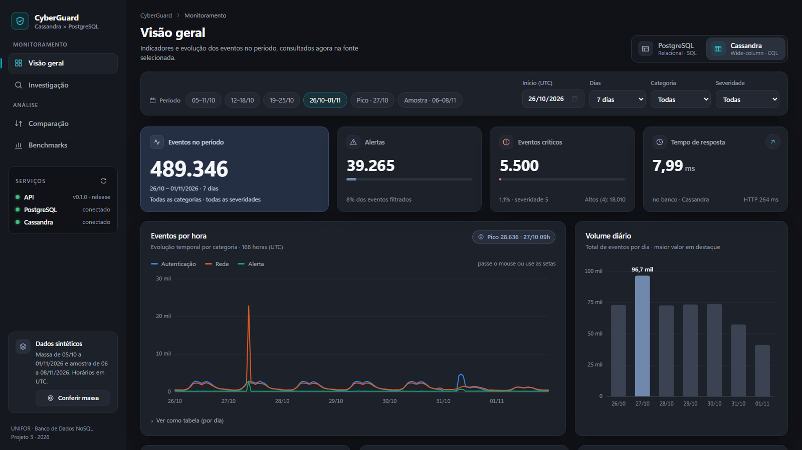

Projeto 3 · Banco de Dados NoSQL · UNIFOR
Eventos de segurança em Apache Cassandra e PostgreSQL
Pedro Luiz e Paulo Henrico
Paradigma 1 · orientado a colunas (wide-column)
Novembro de 2026
Comparar, no mesmo cenário e com a mesma massa de dados, um banco wide-column (Apache Cassandra 5) e um banco relacional (PostgreSQL 17), com medições reprodutíveis e um dashboard que consulta os dados reais.
Paradigma, arquitetura, escalabilidade, mercado e licença
Modelos nos dois bancos, CRUD equivalente e 1 milhão de eventos
6 experimentos, 30 medições por operação, medianas comparadas
Filtros, troca de banco e tempos em ms, ao vivo
Um SOC recebe eventos contínuos de firewalls, VPN, IDS, EDR e servidores: autenticação, rede e alertas. Ele precisa responder:
UUID v4, horário UTC em milissegundos, dispositivo, IP, categoria, tipo e severidade. Resultado, mensagem e metadados podem ser corrigidos.
Série temporal de escrita intensa, consultada por chaves conhecidas e janelas de tempo.
Bom para séries temporais, IoT, logs e eventos. Evitar em joins, consultas ad hoc e transações entre entidades.
A escrita comum não lê o dado anterior: por isso é barata. A LWT (usada no nosso CREATE) lê antes, via Paxos.
Neste projeto: um único nó (RF = 1). Ele avalia modelagem e consultas, mas não demonstra escala horizontal nem tolerância a falhas.
| PostgreSQL · relacional | Cassandra · wide-column | |
|---|---|---|
| Modelo | Tabelas normalizadas e tipadas | Tabelas particionadas, uma por consulta |
| Relações | Chaves estrangeiras e joins | Sem joins; a aplicação mantém as cópias |
| Linguagem | SQL completo, agregações ad hoc | CQL: partição obrigatória na consulta |
| Transações | ACID entre tabelas (MVCC) | LWT por partição; consistência ajustável |
| Índices | B-tree, parcial, de cobertura… | Chave primária (partição + clustering); SAI existe, não usado aqui |
| Escrita | WAL, fsync a cada commit (padrão) | Commit log + memtable, fsync periódico |
| Escala | Vertical + réplicas de leitura | Horizontal, sem mestre |
| Melhor para | Integridade forte e consultas variadas | Alto volume de escrita e acesso previsível |
Docker Compose (WSL 2): só os dois bancos, com volumes persistentes
Contêiner da API: binário Rust iniciado por scripts/run_api.py, na mesma rede, fora do Compose
Dashboard: servidor Vite no Windows, com proxy /api para a API
A mesma API atende as duas fontes: /api/postgresql/… e /api/cassandra/…. Não há escrita dupla escondida. Todas as portas ficam só em 127.0.0.1.
CRUD equivalente: no PostgreSQL, uma transação; no Cassandra, o ciclo pending → active → deleted com LWT. UPDATE exige a revisão esperada, e um UUID excluído nunca é reutilizado.
| Exp. | Operação |
|---|---|
| E1 | READ por UUID |
| E2 | Q1 · linha do tempo de um dispositivo |
| E3 | Q2 · IP de origem · Q3 · alertas |
| E4 | Painel agregado de 1 e 7 dias |
| E5 | Controle: PostgreSQL com view materializada |
| E6 | Escritas CRUD com 8 clientes |
VACUUM ANALYZEAmbiente: Intel Core Ultra 7 155H, 15,4 GiB · Docker (WSL 2) · PostgreSQL 17.11 com 2 GiB · Cassandra 5.0.9 com 5 GiB, 1 nó · cache quente · API release
Barras em escala logarítmica: quantas vezes o mais rápido superou o outro (mediana HTTP de 30 execuções). Resposta idêntica em 9 de 9 operações; o mesmo vencedor em 30 de 30 pares.
Na configuração padrão, o Cassandra escreve mais rápido (CREATE: Cassandra 10,8 ms × PostgreSQL 13,2 ms) porque confirma antes do fsync. É uma diferença de política de durabilidade, não do modelo de dados.

Modelar pela consulta é a força do Cassandra: com 1 M, o painel pré-agregado foi de 7,1× a 21,9× mais rápido.
O PostgreSQL venceu as buscas por chave (1,2× a 4,0×) e as escritas quando os dois confirmam antes do fsync.
A vantagem depende da pergunta: pré-agregado, o PostgreSQL também lê rápido, mas precisa de REFRESH.
Escala horizontal e tolerância a falhas não foram medidas: o ambiente tem um único nó.
Escolher o banco pelo padrão de acesso, pela consistência exigida e pelo crescimento esperado, e não pela ideia de que “NoSQL é mais rápido”.
Perguntas?
CyberGuard · os mesmos eventos em Cassandra e PostgreSQL. Cassandra vence o painel pré-agregado; PostgreSQL vence as buscas por chave. Código, modelos, scripts, resultados brutos e evidências da massa estão no repositório github.com/pedroluizmm/CyberGuard.
Pedro Luiz e Paulo Henrico · UNIFOR · Banco de Dados NoSQL